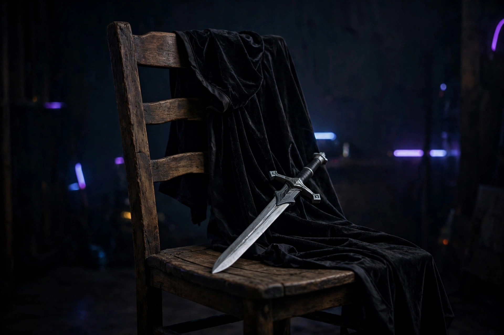

The Prop Compliment Play

Every pretending parent eventually faces the same emergency — usually around the second week of rehearsals: the scene is over, your kid turns to you with shining eyes, and you have nothing. You missed the plot twist. You missed the emotional beat. Your mind was reorganizing the garage. And now you must produce a reaction to a performance you only partially witnessed.
This is where the prop compliment play saves you. It is the single safest technique in the entire pretending repertoire, and it works on one unassailable principle: compliment something you can see. You may have missed the monologue, but the hat is right there. The hat is undeniable. The hat cannot be misremembered.
The Compliment Safety Ladder
Not all compliments are created equal. Ranked from bulletproof to "do not attempt without a spotter":
- Props (safest). The sword, the letter, the suspiciously light suitcase. Props are physical objects that exist in three dimensions. "That sword looks great" can never be wrong. The sword is right there. Everyone can see the sword.
- Costume. The cape, the hat, the boots that are clearly borrowed from someone with bigger feet. Slightly riskier than props only because costume choices can be sore subjects — but "the cape moves really well when you turn" is a hydrodynamic fact, not an opinion.
- Blocking and movement. Where they stood, how they crossed the room, the entrance. "Your entrance was really confident" works even if you can't remember a single line, because entrances are the first thing you saw before your attention wandered.
- Effort. "You clearly worked hard on this." Broad, warm, unfalsifiable. Parenting coaches will tell you to praise effort over talent anyway — so you're not just surviving, you're technically following expert advice.
- The performance itself (danger zone). "You were amazing!" is a landmine. If they know they flubbed the ending, your blanket praise reads as proof you weren't watching. Never lead with the performance. Descend the ladder instead.
Safe vs. dangerous: the compliment table
| Safe (verifiable with your eyes) | Dangerous (requires actual attention) |
|---|---|
| "The sword looks great." | "Your delivery of the betrayal speech was powerful." (Which speech?) |
| "The cape moves really well." | "I loved how you played the grief." (Grief? That was the comedy scene.) |
| "That entrance was confident." | "The ending gave me chills." (There were three endings.) |
| "You must have worked hard on the blocking." | "You were better than last time." (Better at what? Last time when?) |
| "The hat is perfect for the character." | "My favorite part was when—" (Do not finish this sentence. Abort.) |
The 3-step deploy procedure
When the shining-eyes moment arrives, execute in order:
- Scan. Before they ask, your eyes sweep for the nearest visible achievement: a prop, a costume piece, a confident stance. Pick ONE. The first one you notice is the right one — hesitation is what gets you caught.
- Deliver with a specific detail. Not "nice costume" — "the way the cape catches when you turn is great." Specificity is the currency of believability, and parenting experts agree that detailed praise lands better than generic praise anyway. You're not faking; you're optimizing.
- Exit with a question. "Did you make the sword yourself, or did the school have it?" Now THEY are talking, the spotlight is off you, and you get to actually listen to the answer — which, ironically, makes you a better audience member than you were during the scene.
What never to compliment
Never compliment a prop that isn't there — "great sword work" during the scene with no sword is how legends of your inattention are born. Never compliment the "emotional depth" of a farce; if everyone was laughing and you praise the tragedy, the jig is up. And never compare this performance to a previous one you also didn't fully watch — stacked vagueness collapses under its own weight.
The sincere footnote
Here's the thing the comedy obscures: the prop compliment play works because it's usually true. The sword DOES look great. They DID work hard on the blocking. Noticing the visible stuff isn't a lesser form of attention — it's the attention that says "I see what you built," which, for a kid rehearsing in a living room, might be the whole point.